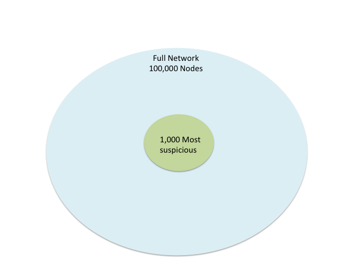

Quest for insights: visualizing trees, graphs and photos
http://johnguerra.co/slides/IMAGINE_researchAgenda
Visual Analytics Researcher
Research Interests
- Visual Analytics
- Trees
- Graphs
- Photos
- Accesibility
- Big Data
How do I do it?

What do I use?

Trees
Work with Michael L. Pack, Audra Buck-Coleman, Catherine Plaisant, Ben Shneiderman.
[TRC2015] [Vis2013][Thesis2013] [TRB2013] [DRS2013] [Vis2011] [CHI2011] [TRB2011]
TreeVersity2 Demo
Networks
Work with Aaron Wilson, Juan Liu, Dan Davies, Peter Jarvis and Eric Bier
Plenty of work has been done on the field
Our objectives
- Apply state of the art of netViz
- Report what worked (and didn't) in our industry setting
- We open sourced some of our components for the community to reuse
Some netviz tools
- NetworkX
- Gephi
- Cytoscape
- Pajek
- NetworkX
- Many others
Why develop another tool?
- Integration
- Web-based
- Scalability
- Industry
Best practices
Customer's needs
- Get an overview of the network
- Explore nodes of interest's ego-networks on demand
Best practice #1: offer overviews and ego-network modes
Overview mode
Too much information
 http://blog.opencog.org/files/2008/10/ssdemo-fwd-15000-before.png
http://blog.opencog.org/files/2008/10/ssdemo-fwd-15000-before.png
{kind=link}
Rank-by-relevance framework
Best practice #2 filter and display the most important nodes
Rank-by-relevance framework 2
Best practice #3 include neighborhoods in the selection

NetClustering.js
https://github.com/john-guerra/netClusteringJsForce-in-a-box
Best practice #4 Cluster and separate groups
https://github.com/john-guerra/forceInABox

Jump into clusters

Jump into clusters

Jump into clusters

Jump into clusters

Best practice #5 Allow users to filter by cluster
Node navigator

Best practice #6 Inform users of what they are seeing
Overview
Ego-network view
Ego-distance mode

Best practice #7 Allow node expansion on demand
Node pining

Best practice #8 Allow custom layouts
Validation
Fraud, waste and abuse

Police chat networks
Drug latent communities

Contributions
- Best practices
- Node Navigator
- Open Sourced force-in-a-box layout
- Open Sourced in-browser clustering
- Rank-by-relevance framework
Photos
Work with Cati Boulanger, Sanjay Kairam, Frank Bentley, Joseph ‘Jofish’ Kaye, David A. Shamma
The problem
How to display groups of photos?
What if the photos have also statistics?

What are the best practices for representing photos with associated statistics with treemaps?
Experiment 1:
Photo count
Ex1. Demo
We measured
- Time to find photo
- User preference
Ex1. Demographics

154 Mechanical Turk Responses (67 women)
Ex1. Results
Avg time to find depending on photo position

Photo count sweet spot

For a 390x440px phototreemap
Experiment 2:
Layout
Demo
We measured
- Time to find photos
- Number of errors
- Accuracy
- User preference
Ex2. Demographics

63 responses (27 women)
Time to find photo (ms)
Errors
| Proportional | 47 |
| Scrollable | 21 |
Accuracy
| Proportional | 86.44% |
| Scrollable | 77.97% |
User preference
81.3% of the participants preferred the scrollable layout
Experiment 3:
User Study
Design
- 7 participants
- Users viewed their own photos
- 5 point likert scale on usefulness and pleasingness for 3x2 configurations
- Labels vs no Labels
- Size and sorting by views, comments or favorites
Configuration preference

Conclusions
- Small number of photos is better but not too small
- Cropping and aspect ration has a big impact
- Scrolling can be preferable to cropping
- Labels are important
Future/Current Work
- Explore cropping compensation techniques
- Usage of treemap deeper levels for categorization
- Zoomable techniques
Future/Current work
Zoomable Photo Treemap
Photo widget to show many photos at once with numeric values and categorical groupings
PhotoRing
How to better allow exploration and navigation of millions on photos
Other photo experiments
BTactile
How to better enable people to support blind students in learning graphics
Other topics
- Time-based Visualization
- Network Visualization
- Social Networks
- Real time/incremental visualization
- Big Data visualization
Thank You
Questions?

PhD

Silicon Valley